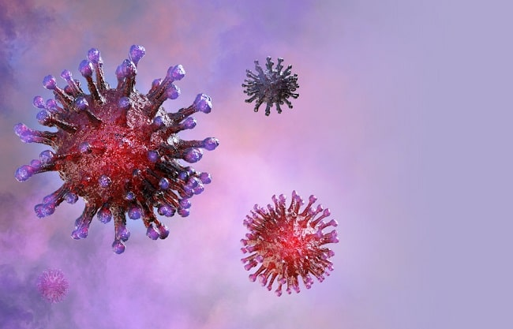

EDU-COVID
EDU-COVID adalah website yang membantu masyarakat dapat membantu melihat cara mencegah Covid-19 menggunakan 5M (Memakai Masker, Mencuci Tangan, Menjaga Jarak, Menjauhi Kerumunan, Mengurangi Mobilitas). Web ini juga menampilkan data & statistik jumlah kasus yang terjadi di indonesia secara real-time.